CrystalLeft
56 x 64 / 9 colors
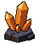
New PixelLab mine-floor tiles, cleaned in LibreSprite. The three upper lanterns, wheel and cart are hidden. Loose amber deposits beside the board are removed from this revision; two distinct large crystal formations grow from the lower corner rocks. Previous source artwork and scenes remain intact.
Actual Unity art-only renders. Original board, frame, characters, floor alignment and shared UI geometry remain unchanged. Production Game has not been changed or merged.
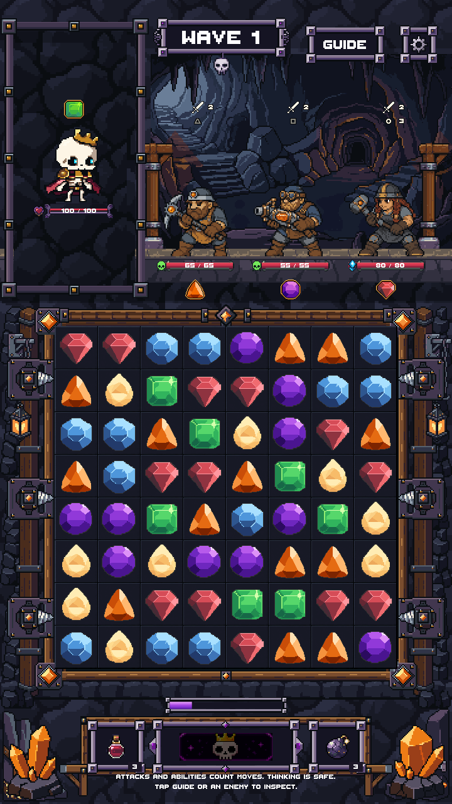
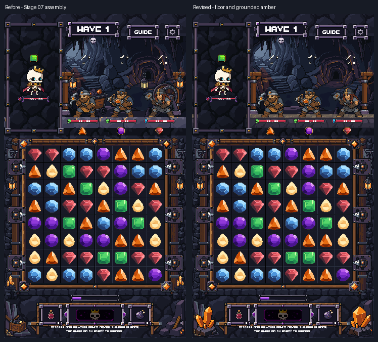
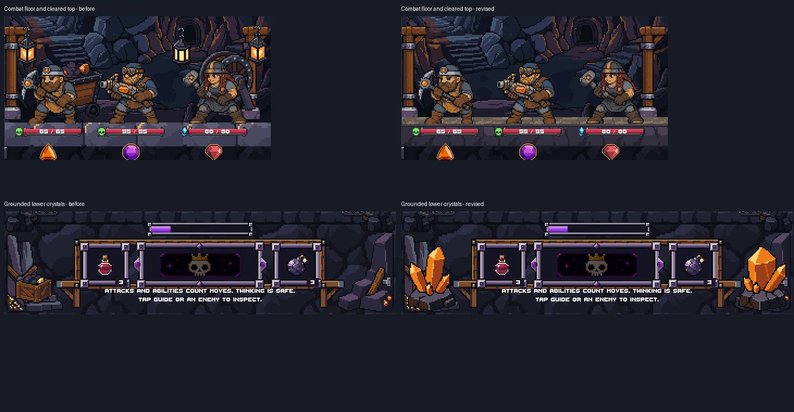
56 x 64 / 9 colors

56 x 64 / 10 colors
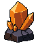
32 x 19 / 3 colors
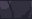
32 x 19 / 3 colors
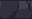
32 x 8 / 4 colors
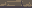
32 x 8 / 4 colors
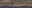
26 generations: rejected standard tileset (1), selected Pro tileset (15), crystal source with 16 alternatives (10). Balance 166.20 after the jobs; no uploaded reference images. The final modules retain editable LibreSprite sources and exact PNG roundtrips.
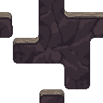
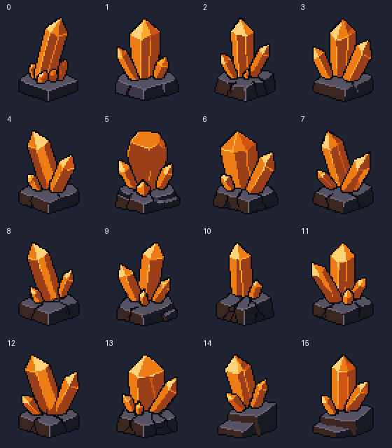
Three Unity capture sizes; original object geometry/references unchanged; eight specifically authorized placements hidden. Opaque UI, character and grid pixels match the original. Six native assets have binary alpha, clean repeat seams, Point filtering and uncompressed imports. Original source files retain their hashes. These are static Unity preview checks, not live combat or phone testing.
Unity checks / Native asset checks / Serialized scene changes / Previous assembly